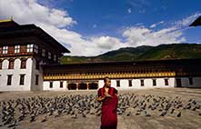
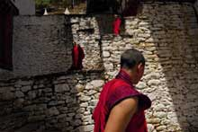
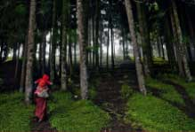

Ветер перемен в горном королевстве. Крохотная страна, затерян- ная в Гималаях, пытается сделать невозможное: совершить рывок из Средневековья в новое тысячелетие
Автор: Брук Лармер
Буддийские паломники, заслышав высокие чистые звуки ритуальной трубы, устремляются на ее зов. Солнце уже скрылось за горами, чернеющими позади Тхимпху — столицы королевства Бутан в Гималаях. Вот-вот начнется заключительный обряд. Среди собравшихся на площади — крестьяне, стриженные под горшок, в поношенной одежке; они три дня добирались из своего захолустья, чтобы оказаться в городе.
Рядом с ними, взявшись за руки, стоят буддийские монахи. У них бордовые от жевания перца бетеля зубы, в тон одеяниям. Как и все, они всматриваются в толпу, пытаясь разглядеть того, кто привлек всеобщее внимание. Это мальчуган в ярко-оранжевой рубахе до колен. Из его ноутбука Macintosh звучат совсем не буддийские заклинания – первые такты дерзкого хита Шакиры Hips Don’t Lie («Бедра не лгут»). И вот семилетний Кинзанг Норбу падает на землю и начинает бешено крутиться на спине, потом встает на голову, высоко поднимая ноги в красных кроссовках Nike и широких спортивных штанах Adidas. На его временной татуировке выведено по-английски «Би-бойз» (нечто вроде «ребята-брейкеры») — так здесь именуют себя парни вроде Кинзанга.
История Бутана
Более тысячи лет Королевство Бутан (Друк-Юл, или Страна Громового Дракона) пребывало в абсолютном уединении — среди гор, в окружении двух гигантов, Индии и Китая. До 1960-х годов в этой стране, отгороженной от внешнего мира и географически, и политически, не было ни дорог, ни электричества, ни автомобилей, ни телефонов, ни даже почты. Древние храмы в высоких, окутанных туманом скалах, непокоренные горы, нетронутые реки и леса — так все и поныне. Но кое-что уже изменилось.
Бутанский эксперимент
Сейчас бутанский эксперимент близится к своей кульминации — переходу к демократии. В 2008 году стране предстоит пережить целый ряд судьбоносных событий: коронацию (четвертый король торжественно передаст корону 28-летнему сыну Джигме Хезару Намгайлу Вангчуку, чтобы тот стал конституционным монархом); празднование столетнего юбилея монархии; главное же — формирование к лету первого демократического правительства.
Бутанский буддизм отличается легким, даже шутливым взглядом на вещи. Немало и откровенных изображений — в тантризме считается, что интимные отношения открывают путь к просветлению.
Бутан разделён на четыре дзонгдэя, в состав которых входят 20 дзонгхагов. Каждый дзонгхаг, в свою очередь, делится на гевоги, которые, иногда, объединены в дунгхаги.
Таблица 1. Административное деление
| Дзонгдэй (зона) |
Админ. центр |
Площадь |
Численность населения |
| 1. Западный |
Тхимпху |
8345 |
281244 |
| 2. Центральный |
Дампху |
11023 |
88855 |
| 3. Южный |
Гелепху |
8499 |
89720 |
| 4. Восточный |
Монгар |
10949 |
175163 |
| 5. Бутан, всего |
Тхимпху |
38816 |
634982 |
Школьное образование бесплатно. Однако родители несут небольшие расходы по благоустройству школы, покупке формы, проезду. Иногда родители вынуждены забирать детей из школы по экономическим соображениям.
Образовательные учреждения Бутана (по состоянию на 2008 год)
- 266 общественных начальных школ
- 94 начальные школы
- 91 средняя школа младшего уровня
- 45 средних школ среднего уровня
- 32 средние школы старшего уровня
До 1960-х годов в этой стране, отгороженной от внешнего мира и географически, и политически, не было ни дорог, ни электричества, ни автомобилей, ни телефонов, ни даже почты.

Дзонги – центры королевской и религиозной власти

Завершив утренние занятия, монахи покидают стены монастыря
